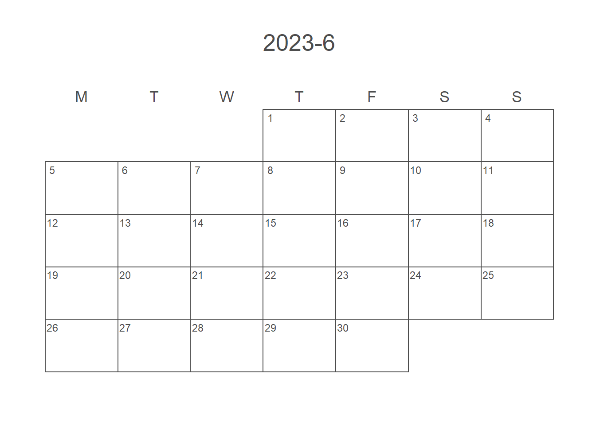
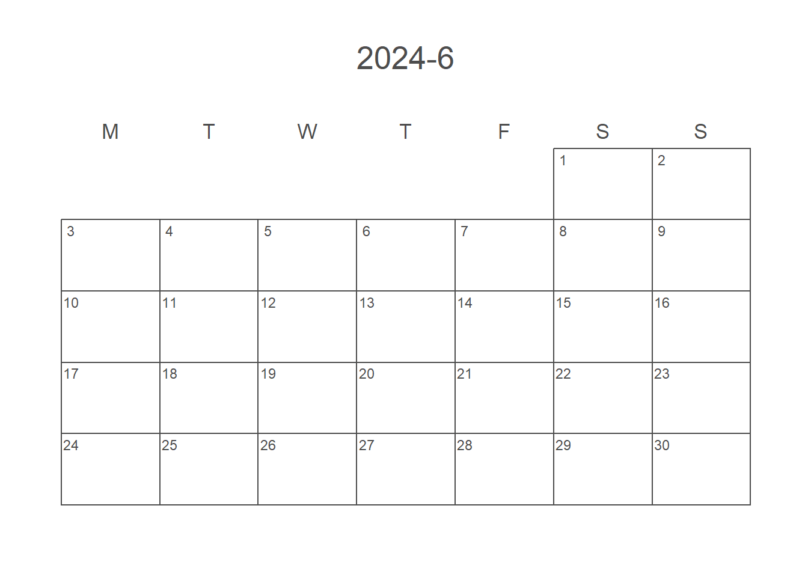

Chap. 7 lubridateで日付・時刻を扱う
年月日や曜日を扱う場合，パッケージlubridateを利用するのが便利である． lubridateは，tidyverseに含まれているパッケージの1つで，日付や時刻・時間データを扱う際には必須と言っても過言ではない．
7.1 準備
例によってパッケージのインストールと呼び出しだが，lubridateはtidyverseに含まれている． そのため，tidyverseを呼び出せばそれでOKである． 日付の確認用としてカレンダーを最後に表示する． そのためのパッケージであるcalendRをインストールしておく．
install.packages("calendR")library(tidyverse)
library(calendR)7.2 1月後・1年後の同一日
例えば，1月後や1年後の同一の日付を得たいとする． これは単純なようで実はややこしい問題を含んでいる． 月には大の月・小の月があるし，年には閏年がある． そのため，同一日がないときがあるため，自分で関数を作成するにはこれらを考慮しなければならない． lubridateを活用すると簡単に計算できる．
1年後の同一の日付を得るには+ years(1)とすれば良い．
単純に365日加えるのとは結果が異なる．
1月後の場合にはmonths(1)を使う
today() + years(0:4)## [1] "2023-05-14" "2024-05-14" "2025-05-14" "2026-05-14" "2027-05-14"today() + days(365 * 0:4)## [1] "2023-05-14" "2024-05-13" "2025-05-13" "2026-05-13" "2027-05-13"today() + months(0:4)## [1] "2023-05-14" "2023-06-14" "2023-07-14" "2023-08-14" "2023-09-14"today() + months(0:4)## [1] "2023-05-14" "2023-06-14" "2023-07-14" "2023-08-14" "2023-09-14"7.3 文字列からDateクラスへの変換
日本語の表記でよく出てくる年・月・日の順の日付表記は，関数ymd()でDateクラスに変換できる．
ymd()は，日付っぽい文字列をDateクラスにしてくれる．
よく使うような以下の文字列は，普通に変換してくれる．
ちなみに，日付の後ろに(火)のような曜日が入っていても問題ない(曜日は無視される)．
c("2023年4月10日", "2023-4-10", "2023_4_10", "20230410", "2023/4/10") %>%
ymd()## [1] "2023-04-10" "2023-04-10" "2023-04-10" "2023-04-10" "2023-04-10"c("2023年4月10日(月)", "2023-4-10(月)", "2023_4_10(月)", "20230410(月)", "2023/4/10(月)") %>%
ymd()## [1] "2023-04-10" "2023-04-10" "2023-04-10" "2023-04-10" "2023-04-10"年が入っていない場合はうまくいかないので，年を追加する必要がある．
c("4月10日", "4/10") %>%
ymd()## Warning: All formats failed to parse. No formats found.## [1] NA NAc("4月10日", "4/10") %>%
paste0("2023-", .) %>%
ymd()## [1] "2023-04-10" "2023-04-10"ここでは日付を中心に扱うが，時刻の計算もうまくやってくれる．
ymd_hms("2023-5-1-12-23-34") %>%
print() %>%
`+`(minutes(40))## [1] "2023-05-01 12:23:34 UTC"## [1] "2023-05-01 13:03:34 UTC"7.4 曜日を求める
日付をもとにwday()を用いて曜日を求めることができる．
ただし，デフォルトでは日曜日を1，月曜日を2のように日曜始まりの場合での曜日番号を示す．
label = TRUEとすると，factorとしての曜日を返してくれる．
x <- today()
wday(x) # week of the day## [1] 1wday(x, label = TRUE)## [1] 日
## Levels: 日 < 月 < 火 < 水 < 木 < 金 < 土7.5 活用例
日付固定(同じ月日)あるいは位置固定(m月の第nのw曜日)のときでの一年後の年月日を求めることを考える． 日付固定の場合は，既に説明したように非常に簡単に求められる．
x <- today()
x + years(1)## [1] "2024-05-14"位置固定の場合は，関数を作成する必要がある．
年月日から第何の何曜日か分からなければ，位置を固定できない．
曜日はwday()で求められるため，第何の曜日かを求める関数が必要だ．
mweek <- function(x){
(mday(x) - 1) %/% 7 + 1
}mday(x)で月の中で何日目か計算し(つまり day(x)と同じ)，そこから1日引いた数字を7で割る．
7で割ったときに第1曜日は1未満，第2曜日は1以上2未満であるため，7で割ったときの整数部分に1を足す．
これで第何の曜日かがわかる．
real <- seq(as.POSIXct("2020-10-1"), as.POSIXct("2020-10-31"), by="day") %>% mweek()
expect <- rep(1:5, each=7)[1:31]
sum(real != expect, na.rm = TRUE)## [1] 0念のため計算したrealと求めるべきexpectが同じか確認する．
real != expect，つまりrealとexpect異なるときはTRUEになる．
この合計が0であれば全部が同じなので，計算結果は正しいといえる．
次に，年月日から1年後の 年と月を分離してそこから求めたい月の1日をbaseの日付とする．
1日から7日までは第1の，8日から14日までは第2の曜日なので，baseに「mweek(x) - 1) * 7」を足してやる． さらに，これに曜日の補正をするため，baseと元の日付(x)との曜日の差を追加する． ただし，差が負の場合は7から引いて正にする． なお，「for(i in seq_along(diff))」でループしている部分は，ベクトルへの対応である． 入力が1日だけの場合は必要ないが，他の部分がベクトルに対応おり，せっかくなので複数の日付(Dateクラスのベクトル)を受け入れるようにした．
これで，一応出来上がった． ただし，第5の曜日の場合は，次の月にずれてしまっている可能性がある． そこで，月がずれていないか確認して，ずれている場合は「NA」を返す．
same_pos_next_yr <- function(x){
yr <- year(x)
mn <- month(x)
base <- ymd(paste0(yr + 1, "-", mn, "-", 1))
diff <- wday(x) - wday(base)
for(i in seq_along(diff)){
if(diff[i] < 0){ diff[i] <- diff[i] + 7 }
}
same_pos <- base + (mweek(x) - 1) * 7 + diff
for(i in seq_along(same_pos)){
if(month(same_pos[i]) != mn[i]){
same_pos[i] <- NA
warning("No same position day with ", x[i], "!")
}
}
return(same_pos)
}実際の日付で確認してみる．
days <- today() + (0:30)
days_n <- same_pos_next_yr(days)## Warning in same_pos_next_yr(days): No same position day with 2023-05-29!## Warning in same_pos_next_yr(days): No same position day with 2023-05-30!days## [1] "2023-05-14" "2023-05-15" "2023-05-16" "2023-05-17" "2023-05-18"
## [6] "2023-05-19" "2023-05-20" "2023-05-21" "2023-05-22" "2023-05-23"
## [11] "2023-05-24" "2023-05-25" "2023-05-26" "2023-05-27" "2023-05-28"
## [16] "2023-05-29" "2023-05-30" "2023-05-31" "2023-06-01" "2023-06-02"
## [21] "2023-06-03" "2023-06-04" "2023-06-05" "2023-06-06" "2023-06-07"
## [26] "2023-06-08" "2023-06-09" "2023-06-10" "2023-06-11" "2023-06-12"
## [31] "2023-06-13"days_n## [1] "2024-05-12" "2024-05-20" "2024-05-21" "2024-05-15" "2024-05-16"
## [6] "2024-05-17" "2024-05-18" "2024-05-19" "2024-05-27" "2024-05-28"
## [11] "2024-05-22" "2024-05-23" "2024-05-24" "2024-05-25" "2024-05-26"
## [16] NA NA "2024-05-29" "2024-06-06" "2024-06-07"
## [21] "2024-06-01" "2024-06-02" "2024-06-03" "2024-06-04" "2024-06-05"
## [26] "2024-06-13" "2024-06-14" "2024-06-08" "2024-06-09" "2024-06-10"
## [31] "2024-06-11"計算できているはずだが，日付だけを見てもよくわからない．
各日付が第何の曜日かを確認してみる．
mweek(days) # 第何の曜日か## [1] 2 3 3 3 3 3 3 3 4 4 4 4 4 4 4 5 5 5 1 1 1 1 1 1 1 2 2 2 2 2 2mweek(days_n)## [1] 2 3 3 3 3 3 3 3 4 4 4 4 4 4 4 NA NA 5 1 1 1 1 1 1 1
## [26] 2 2 2 2 2 2sum(mweek(days) != mweek(days_n), na.rm = TRUE)## [1] 0 # testthat::expect_equal(mweek(days), mweek(days_n))最後の方でエラーが出ている． さらに，曜日も確認してみる．
wday(days, label = TRUE) # 曜日## [1] 日 月 火 水 木 金 土 日 月 火 水 木 金 土 日 月 火 水 木 金 土 日 月 火 水
## [26] 木 金 土 日 月 火
## Levels: 日 < 月 < 火 < 水 < 木 < 金 < 土wday(days_n, label = TRUE)## [1] 日 月 火 水 木 金 土 日 月 火 水 木 金 土 日
## [16] <NA> <NA> 水 木 金 土 日 月 火 水 木 金 土 日 月
## [31] 火
## Levels: 日 < 月 < 火 < 水 < 木 < 金 < 土sum(wday(days) != wday(days_n), na.rm = TRUE)## [1] 0 # testthat::expect_equal(wday(days), wday(days_n))こちらも，最後の方でエラーが出ている． このエラーは，第5週でずれるためでてくる部分である． ただし，閏年以外の2月だけは4週にピッタリ収まるので，エラーが出ないはずだ．
テストもだいたいあっていそうだが，分かりにくいため，カレンダーで表示してみる．
weeknames <- c("M", "T", "W", "T", "F", "S", "S")
title_1 <- paste0(year(x) , "-" ,month(x))
title_2 <- paste0(year(x) + 1, "-" ,month(x))
calendR::calendR(year(x) , month(x), title = title_1, start = "M", weeknames = weeknames)
calendR::calendR(year(x) + 1, month(x), title = title_2, start = "M", weeknames = weeknames)